Two unlabelled bottles both contain C₄H₈O₂. One smells of pear drops and nail-polish remover. The other smells of rancid butter. You could sniff them, but a chemist would rather ask the molecules directly, with light and with magnets. The same physics, used on the water in your body, is an MRI scan.
Today we work one unknown, U1, from formula to structure:
Formula: count rings and π bonds before guessing anything
IR: which functional groups are there, and which aren’t
¹H NMR: shift, integral and splitting, one clue each
¹³C NMR: how many kinds of carbon
Testing candidates: a structure is a hypothesis that must explain every signal
Last time (Day 18) we read amines and aromatic rings by structure; today the structure is what we’re looking for.
Start with the formula
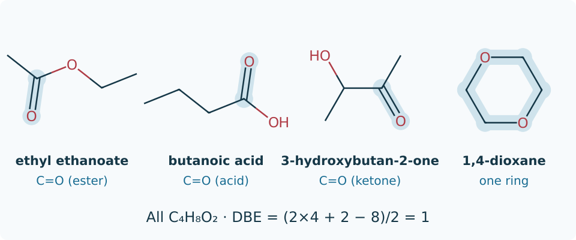
Four C4H8O2 candidates
DBE = (2C + 2 − H)/2 counts rings + π bonds. O doesn’t enter it. One DBE can be a C=O, a C=C or a ring.
Try it: what is the DBE of C₄H₈O₂, and does that prove there’s a C=O?
(8 + 2 − 8)/2 = 1. No: 1,4-dioxane uses its one DBE as a ring. The formula narrows the field but doesn’t pick the structure.
Three instruments, three questions
method
what it detects
what it tells you
formula
composition
DBE: rings + π bonds
IR
bond vibrations
which functional groups are present (C=O, O–H)
¹H NMR
each kind of H
shift: neighbourhood · integral: how many H · splitting: H next door
¹³C NMR
each kind of C
how many carbon types; C=O vs C–O vs alkyl
Each method tests a different prediction, which is why they’re stronger together than any one alone.
Reading an IR trace
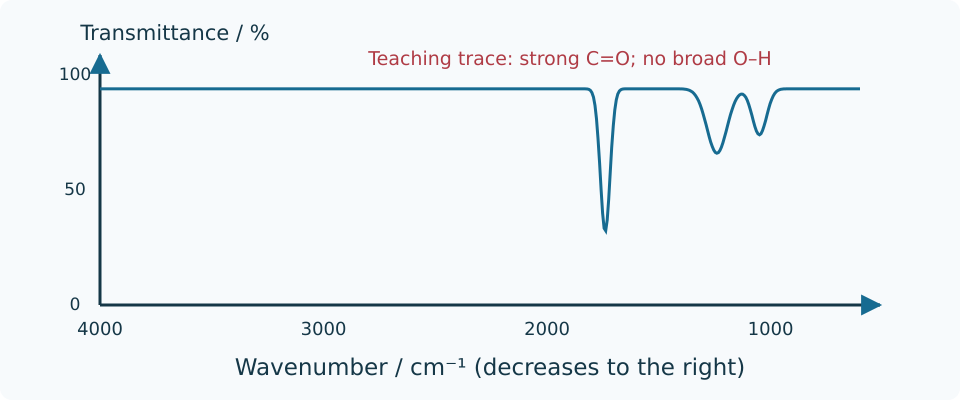
Simulated ester IR spectrum
The y-axis is transmittance: a dip means light was absorbed.
Wavenumber runs high to low, left to right, by convention.
Strong, sharp dip near 1740 cm⁻¹: C=O. Nothing broad at 2500–3600: no O–H.
On an absorbance plot the same band would point up, so read the y-axis label first.
Each functional group has its own band
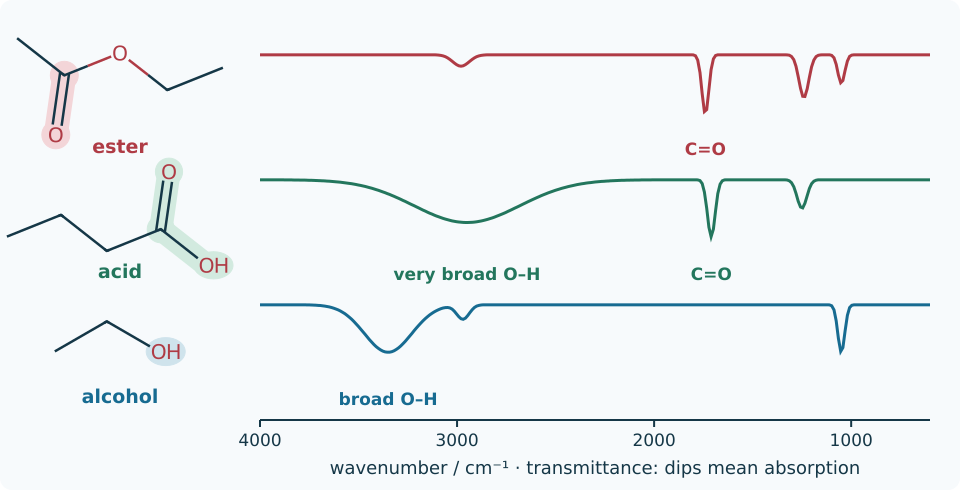
IR traces of an ester, an acid and an alcohol
C=O: 1650–1800 cm⁻¹, strong and sharp
Alcohol O–H: 3200–3600 cm⁻¹, broad. Acid O–H: 2500–3300 cm⁻¹, very broad, running into the C–H bands
Absence counts, if you looked
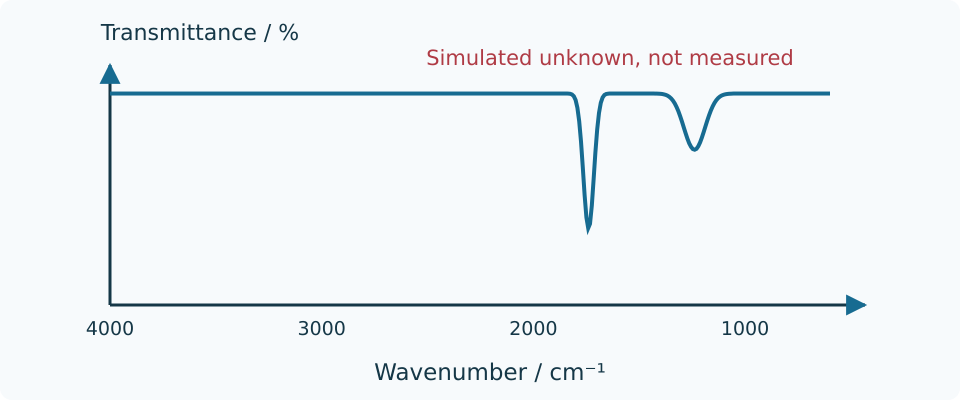
Unknown U1: simulated infrared trace
U1 has a strong C=O and no broad O–H anywhere from 2500 to 3600 cm⁻¹.
Try it: which C₄H₈O₂ candidates does this challenge, and what would weaken that argument?
Butanoic acid (needs a huge acid O–H) and 3-hydroxybutan-2-one (needs an O–H). Dioxane has no C=O. The argument only holds if that region was measured and the signal wasn’t too weak.
¹H NMR: one signal per kind of hydrogen
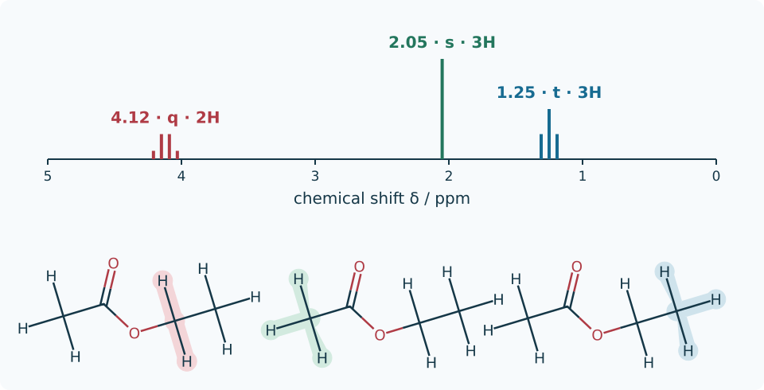
Proton NMR of U1 mapped onto ethyl ethanoate
Each signal carries three clues: where it is (shift), how big it is (integral), and how many lines (splitting).
Equivalent H share a signal
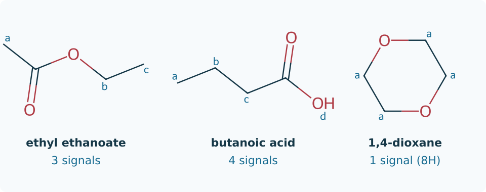
Counting proton environments
H atoms are equivalent when symmetry or free rotation makes them indistinguishable. The three H of a CH₃ are always equivalent.
Try it: how many ¹H signals does butanoic acid give, and what are their integrals?
Four: CH₃ (3H), CH₂ (2H), CH₂ next to C=O (2H) and O–H (1H). That’s 3 + 2 + 2 + 1 = 8 H.
Chemical shift: what’s next door
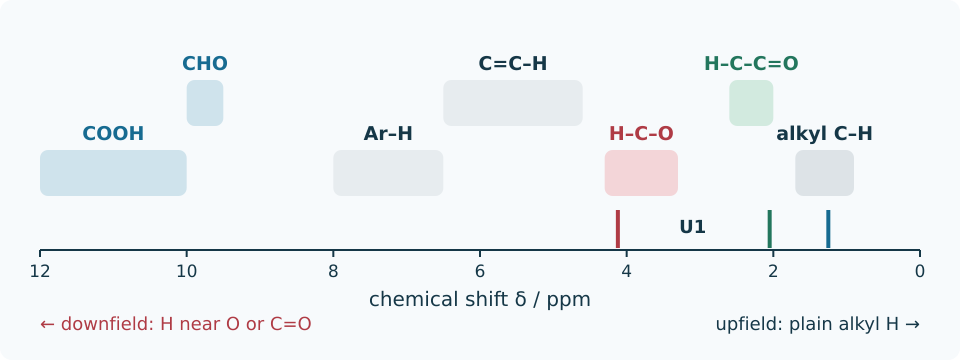
Typical proton shift ranges
Electronegative neighbours pull electron density away from H, which moves its signal downfield (to the left). U1’s three signals land in three zones: H–C–O at 4.12, H–C–C=O at 2.05 and plain alkyl at 1.25.
Integrals count hydrogens
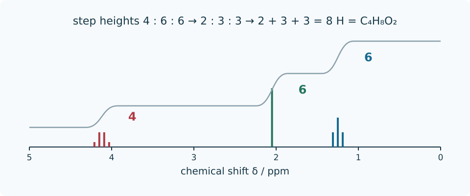
Integral curve over the U1 spectrum
The area under a signal, not its tallest line, is proportional to the number of H. The integrals give a ratio; the formula fixes the total.
Try it: the integrator reports 6, 6 and 4. Turn that into H counts for C₄H₈O₂. Is the singlet taller than the triplet because it has more H?
Divide by 2: 3 : 3 : 2 = 8 H. No: both have 3H. The singlet’s area sits in one line, while the triplet’s is spread over three.
Splitting: count the neighbours’ H
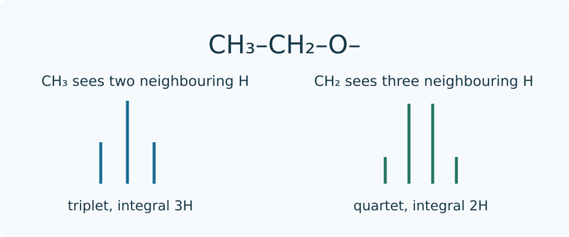
An ethyl group gives a linked quartet and triplet
n equivalent H on the neighbouring carbon(s) → n + 1 lines. A 2H quartet and a 3H triplet together are the signature of CH₃–CH₂–.
Try it: a CH₃ sits next to a CH carrying one H. What pattern does the CH₃ give?
A 3H doublet. One neighbouring H gives 1 + 1 = 2 lines; the integral is still 3H.
A singlet means nobody’s next door
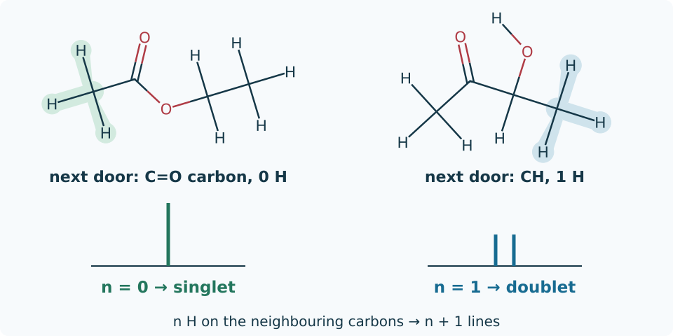
Singlet versus doublet methyl
The acetyl CH₃ of an ester sits on the C=O carbon, which has no H. So it’s a 3H singlet near 2 ppm. A CH₃ on a CH would be a doublet.
¹³C NMR: one line per kind of carbon
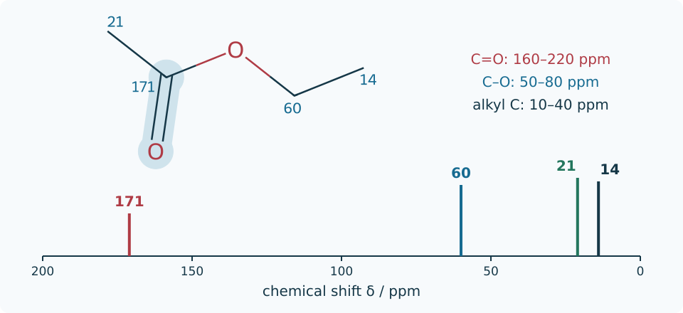
Carbon-13 NMR of U1 assigned to ethyl ethanoate
U1 shows four carbon signals: C=O at 171, O–CH₂ at 60, and two CH₃ at 21 and 14. Routine ¹³C spectra show no splitting, and line heights are not carbon counts.
Symmetry hides carbons
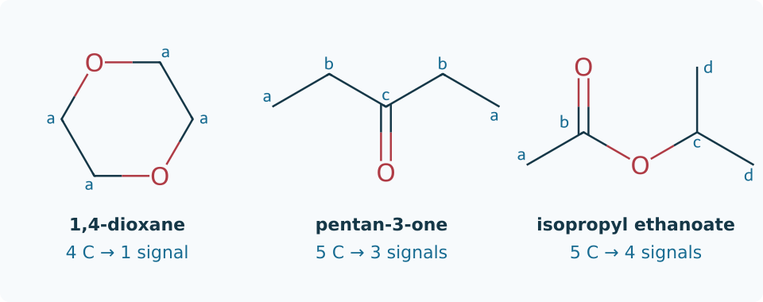
Symmetry merges carbon signals
Equivalent carbons share one signal, so signals ≤ carbons. Fewer signals than carbons points to symmetry.
Try it: 3-methylpentane, CH₃CH₂CH(CH₃)CH₂CH₃, has six carbons. How many ¹³C signals?
Four: the two end CH₃, the two CH₂, the CH, and the branch CH₃. A mirror plane through the CH makes the two ethyl arms identical.
Putting U1 together
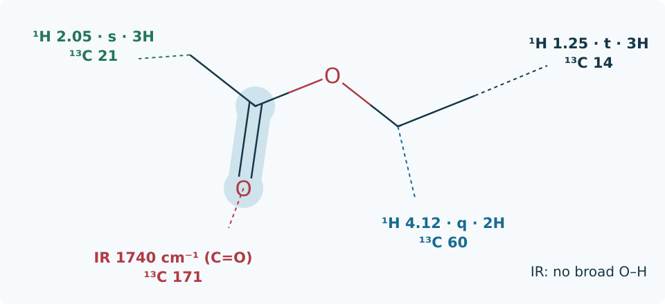
Every observation assigned to ethyl ethanoate
Formula and IR give one C=O, no O–H. The q/t pair gives CH₃CH₂–, and its 4.12 shift puts it on O. The 2.05 singlet is CH₃ on C=O. Join them: CH₃C(=O)OCH₂CH₃, with nothing left over.
Test the rival: butanoic acid
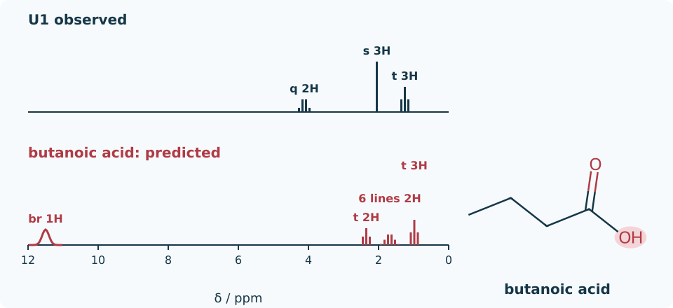
U1 against the butanoic acid prediction
A candidate earns its place by predicting a spectrum. Butanoic acid predicts four signals; U1 has three.
Try it: give two observations that reject butanoic acid. Why doesn’t U1’s CH₃ triplet help?
No broad O–H (IR or ~11.5 ppm), and no O–CH₂ quartet or 3H singlet. Both structures end in CH₃–CH₂–, so a CH₃ triplet fits both.
Test the rival: 3-hydroxybutan-2-one
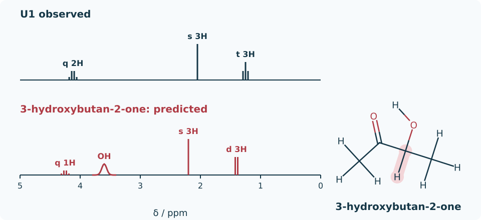
U1 against the 3-hydroxybutan-2-one prediction
This candidate also has a quartet near 4.2 and a singlet near 2. Read the integrals and the methyl pattern.
Try it: which two features of this prediction contradict U1?
Its quartet is 1H (a CH on oxygen), not 2H, and its CH₃ is a doublet, not a triplet. It also has an O–H that IR didn’t see.
Making a claim you can defend
evidence
ethyl ethanoate
butanoic acid
3-hydroxybutan-2-one
1,4-dioxane
C₄H₈O₂
✓
✓
✓
✓
IR: C=O, no O–H
✓
✗
✗
✗
¹H: q 2H · s 3H · t 3H
✓
✗
✗
✗
¹³C: four signals
✓
✓
✓
✗
“U1 is best explained by ethyl ethanoate among the candidates tested: it accounts for every observation and each rival fails at least one independent test.”
Try it: why not just write “U1 is ethyl ethanoate, proven”?
We tested a finite list, and these spectra are simulated. A real identification also depends on data quality, sample purity and a reference spectrum.
Mistakes we see every year
mistake
fix
including O in the DBE formula
DBE = (2C + 2 − H)/2; O drops out
“dip = less absorption” on an IR trace
in transmittance, a dip is absorption
“a quartet means 4 H”
lines count the neighbours’ H; the integral counts the H
comparing tallest lines as H counts
compare areas (integrals)
“6 carbons but 4 signals, so impossible”
symmetry makes carbons equivalent
naming a molecule from one IR band
C=O fits many molecules; add NMR and the formula
rejecting with a feature both candidates share
use an observation the candidates disagree about
Summary
concept
key fact
DBE
(2C + 2 − H)/2 = rings + π bonds
IR
C=O 1650–1800 sharp; O–H broad; acid O–H very broad
¹H shift
further left near O or C=O
¹H integral
area ∝ number of H; formula fixes the total
¹H splitting
n neighbouring H → n + 1 lines
¹³C
one line per carbon environment; heights don’t count
symmetry
equivalent atoms share a signal
a structure
is a hypothesis: predict, compare, reject rivals
Next: using spectra as evidence in synthesis (Day 22). Practice:exercises · self-check